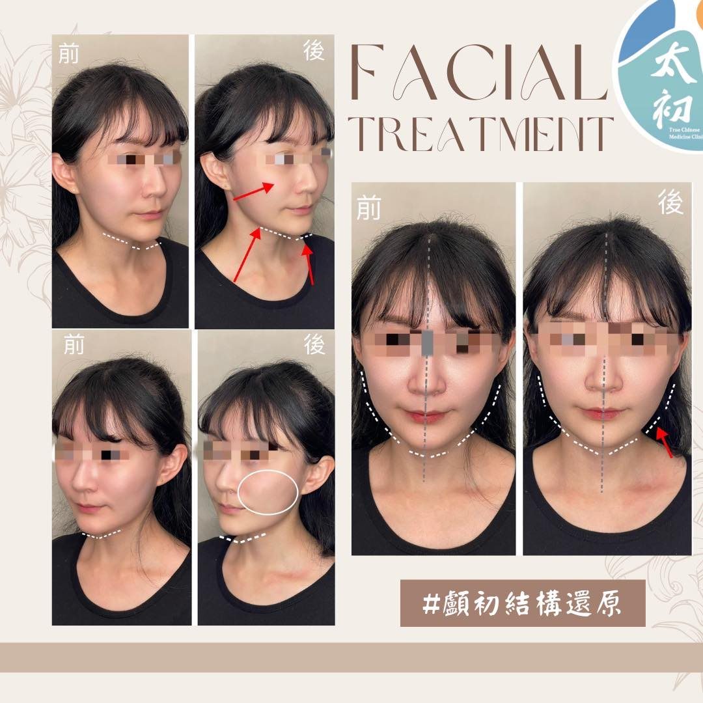

#輪廓線 #下巴歪斜 #顱初結構還原
#輪廓線 #下巴歪斜 #顱初結構還原
本周在處理顏面歪斜的個案裡，印象最深刻的是一位20多歲的年輕C小姐，因牙齒矯正後造成臉部輪廓歪斜，尤其張嘴與打哈欠特別明顯，雖已尋求醫美注射肉毒、玻尿酸等治療，獲得短暫性改善，但始終對於雙臉輪廓線不勻稱感到不滿意。
經過仔細諮詢與 #顱初結構還原 診療後，便有了今天的前後對比照片，當下請C小姐照照鏡子、張口打哈欠多次確認，據其所述：開口歪斜的下巴終於均衡歸正，下顎線條也更加流暢，拉提蘋果肌的同時，也讓下巴更加立體。
在治療後3-5天的電訪追蹤，C小姐反饋都有持續維持，並且期待著下一次的療程。
謝謝C小姐的同意，願意分享前後對比照與這份雀躍開心，愛美是人的天性，即便過程中 #無痛 且 #非侵入性 ，從骨骼肌肉的角度，也一樣能快速找回勻稱的自信美。
#顱初結構還原-專人諮詢⬇️
https://lin.ee/jrVoSeM
門診預約⬇️
http://125.229.186.2:8080/
關於太初⬇️
https://reurl.cc/RWROV6
台北市中山區復興北路92號6樓-1
太初中醫診所
中醫師 黃彥鈞
